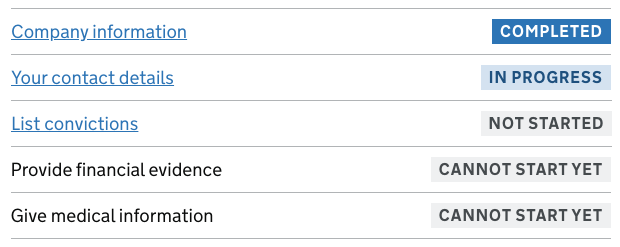

Task list pages
Being worked on
A cross-government group is collaborating on work to update this pattern and build it as a component.
A cross-government group is collaborating on work to update this pattern and build it as a component.
Task list pages help users understand:
- the tasks involved in completing a transaction
- the order they should complete tasks in
- when they’ve completed tasks
There’s a coded example of a task list page in the GOV.UK Prototype Kit. To use the example, get the following code from the Prototype Kit repository on GitHub:
When to use this pattern
Only use a task list page for longer transactions involving multiple tasks that users may need to complete over a number of sessions.
Try to simplify the transaction before you use a task list page. If you’re able to reduce the number of tasks or steps involved, you might not need one.
How it works
You should show a task list page:
- at the start of the transaction
- at the start of each returning session
If you use a task list page in your service, you’ll need to:
- group related actions into tasks
- show the status of the tasks
If there are lots of tasks to complete, you might also need to group them further into steps.
Group related actions into tasks
Group related activities and questions into tasks, for example, ‘Provide financial evidence’ and ‘Give medical information’. This will help users understand and plan what they need to do.
Where possible, task names should:
- describe what the task or activity will involve
- start with verbs, for example, ‘check’, ‘declare’, ‘report’
Show the status of the tasks
Include a summary above the task list to say how many tasks have been completed.
You might find a better word to describe what a ‘task’ is for your users. If your service is an application form, each task might be a ‘section’ of questions to complete.
Make it clear to users which tasks they’ve completed and which still need their attention, by labelling them using the Tag component.
Use the following labels to describe the different states of a task:
- ‘Not started’ (in grey) if the user can start work on the task, but has not done so yet
- ‘Cannot start yet’ (in grey) if the user cannot start the task yet - for example because another task must be completed first
- ‘In progress’ (in light blue) if the user has started but not completed the task
- ‘Completed’ (in blue) if the user has completed the task
Group tasks into steps
If your transaction involves lots of tasks, make it manageable by splitting it up into steps that represent stages in the process.
For example, you could group all tasks which help users find out if your service is right for them in a step called ‘Check before you start’.
Where possible, allow users to complete tasks in any order. This will help them plan their time and complete sections as and when they can.
Marking tasks as completed
Sometimes, it’s better to let the user decide when a task is completed.
This can be helpful when a task involves:
- some questions that are optional
- writing a long answer (such as in a textarea)
- looking up information, such as details about previous jobs
- answers that need to be checked carefully with someone else
Do this by asking a radio question at the end of the task — either as the last question (if the task is a single page) or on the ‘Check answers’ page (if the task uses multiple question pages).
Ask ‘Have you completed this section?’ with the radio options ‘Yes, I’ve completed this section’ or ‘No, I’ll come back later’.
If the user selects ‘No, I’ll come back to it later,’ mark the task as ‘Incomplete’ or ‘In progress’.
If the user selects ‘Yes, I’ve completed this section,’ mark the task as ‘Completed’.
<form action="/form-handler" method="post" novalidate>
<div class="govuk-form-group">
<fieldset class="govuk-fieldset">
<legend class="govuk-fieldset__legend govuk-fieldset__legend--m">
Have you completed this section?
</legend>
<div class="govuk-radios" data-module="govuk-radios">
<div class="govuk-radios__item">
<input class="govuk-radios__input" id="have-you-completed-this-section" name="have-you-completed-this-section" type="radio" value="yes">
<label class="govuk-label govuk-radios__label" for="have-you-completed-this-section">
Yes, I’ve completed this section
</label>
</div>
<div class="govuk-radios__item">
<input class="govuk-radios__input" id="have-you-completed-this-section-2" name="have-you-completed-this-section" type="radio" value="no">
<label class="govuk-label govuk-radios__label" for="have-you-completed-this-section-2">
No, I’ll come back to it later
</label>
</div>
</div>
</fieldset>
</div>
<button class="govuk-button" data-module="govuk-button">
Continue
</button>
</form>{% from "govuk/components/button/macro.njk" import govukButton %}
{% from "govuk/components/radios/macro.njk" import govukRadios %}
<form action="/form-handler" method="post" novalidate>
{{ govukRadios({
idPrefix: "have-you-completed-this-section",
name: "have-you-completed-this-section",
fieldset: {
legend: {
text: "Have you completed this section?",
isPageHeading: false,
classes: "govuk-fieldset__legend--m"
}
},
items: [
{
value: "yes",
text: "Yes, I’ve completed this section"
},
{
value: "no",
text: "No, I’ll come back to it later"
}
]
}) }}
{{ govukButton({
text: "Continue"
}) }}
</form>Always allow users to go back into a task to change their answer.
Error messages
If the user does not select an option, show an error message to say: ‘Select whether you’ve completed this section’.
<form action="/form-handler" method="post" novalidate>
<div class="govuk-form-group govuk-form-group--error">
<fieldset class="govuk-fieldset" aria-describedby="have-you-completed-this-section-error-error">
<legend class="govuk-fieldset__legend govuk-fieldset__legend--m">
Have you completed this section?
</legend>
<p id="have-you-completed-this-section-error-error" class="govuk-error-message">
<span class="govuk-visually-hidden">Error:</span> Select whether you've completed this section
</p>
<div class="govuk-radios" data-module="govuk-radios">
<div class="govuk-radios__item">
<input class="govuk-radios__input" id="have-you-completed-this-section-error" name="have-you-completed-this-section-error" type="radio" value="yes">
<label class="govuk-label govuk-radios__label" for="have-you-completed-this-section-error">
Yes, I’ve completed this section
</label>
</div>
<div class="govuk-radios__item">
<input class="govuk-radios__input" id="have-you-completed-this-section-error-2" name="have-you-completed-this-section-error" type="radio" value="no">
<label class="govuk-label govuk-radios__label" for="have-you-completed-this-section-error-2">
No, I’ll come back to it later
</label>
</div>
</div>
</fieldset>
</div>
<button class="govuk-button" data-module="govuk-button">
Continue
</button>
</form>{% from "govuk/components/button/macro.njk" import govukButton %}
{% from "govuk/components/radios/macro.njk" import govukRadios %}
<form action="/form-handler" method="post" novalidate>
{{ govukRadios({
idPrefix: "have-you-completed-this-section-error",
name: "have-you-completed-this-section-error",
fieldset: {
legend: {
text: "Have you completed this section?",
isPageHeading: false,
classes: "govuk-fieldset__legend--m"
}
},
errorMessage: {
text: "Select whether you've completed this section"
},
items: [
{
value: "yes",
text: "Yes, I’ve completed this section"
},
{
value: "no",
text: "No, I’ll come back to it later"
}
]
}) }}
{{ govukButton({
text: "Continue"
}) }}
</form>Research on this pattern
This pattern was originally developed and tested by a team at the Government Digital Service (GDS).
The team built prototypes of task lists for 3 services, Register as a childminder, Learn to drive and Transport goods and tested them with 34 users over 5 rounds of research.
The pattern was iterated after each round of testing.
You can read more about testing and iterating the task list page pattern.
In the original pattern only completed tasks were labelled. Some users did not realise they had to complete all the tasks before they could continue, or thought that they had completed the whole transaction.
The pattern has now been iterated to include labels for all statuses and a summary above the list.
Known issues and gaps
User research and feedback on this pattern has shown that:
- some screen reader users are frustrated by having to tab through every section each time they return to the task list after completing a task
- some users currently click on task statuses, thinking they are buttons or links
- the use of uppercase in task statuses may make them harder to read
- some services need users to complete tasks in a particular order, for example, a user must fill in an application before they can pay
- once a few tasks have been completed it becomes harder to scan the page and spot incomplete tasks
More user research is needed to find out:
- whether or not users of screen readers struggle to perceive tasks that cannot be started yet, because they are not marked up with hyperlinks
- how to help screen reader users to get an overview of the progress they have made through the task list
- whether to return users to the task list after each task or take them straight to the next task in the sequence
- the best way to show when tasks must be completed in a fixed order
- how to ensure users can see which tasks have been completed and which they still need to do
Services using this pattern
This pattern has been used in a number of services, including the following.
Ministry of Justice
Apply for probate
Money claims
Ofsted
Register as a childminder
Next steps
Since September 2021, a cross-government group have been collaborating on work to co-design an update to this pattern and introduce it as a component.
The next step is to build the prototype component.
This work is open to anyone that wants to help us. Join the ‘task-list-collab’ Slack to find out how you can help.
If you’ve used this pattern, you can also help by sharing your user research on GitHub.
Help improve this pattern
To help make sure that this page is useful, relevant and up to date, you can:
- take part in the 'Task list pages' discussion on GitHub and share your research
- propose a change – read more about how to propose changes in GitHub
Need help?
If you’ve got a question about the GOV.UK Design System, contact the team.